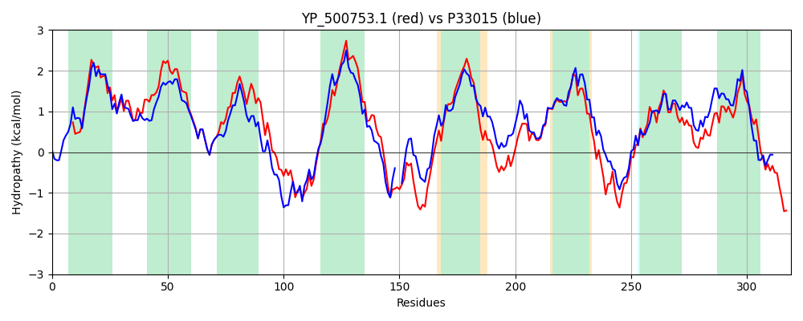

Hit Accession: P33015
Hit TCID: 9.B.102.1.2
Hit Description: gnl|BL_ORD_ID|9884 gnl|TC-DB|P33015|9.B.102.1.2 UPF0394 inner membrane protein yeeE OS=Escherichia coli (strain K12) GN=yeeE PE=1 SV=1
Mach Len: 319
e:0.000000
Query TMS Count : 8
Hit TMS Count: 9
TMS-Overlap Score: 7.400000
Predicted Substrates:None
BLAST Alignment:
Score: 950 , Bit scores: 370 bits, E-value: 1.9e-128, Alignment length: 319, Percentage identity: 55
Query: 1 MYVQKNNKMFYALLIAITIQSIGLLILTATDILQIPAHSFPILGTIIGSFIFGIGIVLAGGCATGTWYRAGEGLIGSWIALVLYAVTAAITKTGILKPVMDKINQPTNVNSDMSQTTGIPFWGLVVILTIITIFLVVRTLNNKKVRVAVPKLKQRYTGIRYYLFEKRYHPFIAAIVIGLIALLAWPMSASTGRNDGLGITTPSANLVHFLITGETKFIDWGVFLVLGIFIGSYIAARGSREFKWRLPDKITIRNSAIGGICMGFGASVAGGCSIGNGLVETATMTWQGWIALASMIVGVWTMSHFIFVRPMKKVHQQSA 319
MY+ KNN+MFYALLIAI++QS+G+ L +L A +FP LGT+IG +IFG+GIVLAGGCATGTWYRAGEGLIGSWIAL Y V +A+ ++ + + + ++ +++T + W LV +L +IT+++V++ L K++VA L R TGI + LFEKR+HPF+ A++IGLIALLAWP+S +TGR GLGIT+P+AN++ FL+ G+ K+I+WGVFLVLGIF+GS+IAA+ SREF+ R D T S +GG+ MGFGAS+AGGCSIGNGLV TA MTWQGWI L MI+GVWT S ++VRP +K +A
Sbjct: 33 MYIVKNNRMFYALLIAISVQSVGVFALIQAGLLTYEAGAFPWLGTVIGGYIFGLGIVLAGGCATGTWYRAGEGLIGSWIALFTYMVMSAVMRSPHASGLNQTLQHYSTEHNSIAETFNLSVWPLVAVLLVITLWVVMKELKKPKLKVAT--LPPRRTGIAHILFEKRWHPFVTAVLIGLIALLAWPLSEATGRMFGLGITSPTANILQFLVAGDMKYINWGVFLVLGIFVGSFIAAKASREFRVRAADAQTTLRSGLGGVLMGFGASIAGGCSIGNGLVMTAMMTWQGWIGLVFMILGVWTASWLVYVRPQRKARLATA 349 | Protein Hydropathy Plots: |
|---|
| |
Pairwise Alignment-Hydropathy Plot:
|
|---|
|  |